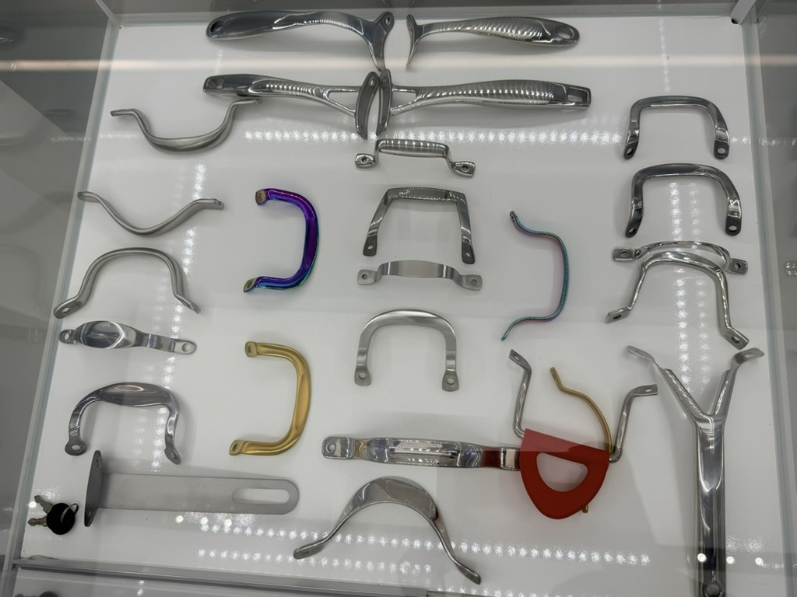

Real business-visit photograph, used as product context only. It does not show an inspected lot or prove any product's conformity.
Katherine from Taotao Trading
Your China supplier has several handle designs and finishes ready for inspection. The booking form asks for an AQL. Before entering a number, agree which goods the inspector will actually select from and what would make a unit unacceptable.
Why the lot comes first
A single inspection result can be misleading if the buyer thinks it covers every ordered variant while the inspector has checked only one accessible group. A sample of polished handles does not, by itself, establish the condition of a separately produced painted version.
SGS describes final random inspection as using defined AQL sampling and reporting on areas including workmanship, quantity, packaging and labeling. That supports using an agreed inspection plan. It does not supply the missing product requirements for your order or guarantee that every unit is defect-free.
Request a one-page inspection scope
Use this Taotao scope table before approving the booking. Ask the inspection provider to confirm the sampling method and acceptance rules, including how different SKUs or lots will be treated.
| Scope field | What to put in writing |
|---|---|
| Goods available | Order reference, SKU, finish, quantity, lot identification and packing status for each group. |
| Sampling boundaries | Which groups form each inspection lot; how cartons and units will be selected; access to the full lot. |
| Defect descriptions | Clear examples of unacceptable burrs, damaged finishes, missing components or wrong dimensions, with the agreed severity classification. |
| Measurement and function | Drawing revision, dimensions and tolerances to check; fixtures or mating parts needed for agreed functional checks. |
| Decision rule | Sampling standard and edition, inspection level, AQL where applicable, acceptance/rejection rules and any separate mandatory checks. |
| Exceptions | Unavailable variants, unfinished cartons, inaccessible goods or tests outside the provider's scope; how these will be reported. |
Verify before the inspector travels
Reconcile the order list with the supplier's dated readiness list. Send the same drawing, reference photographs and scope to both supplier and inspector. Ask the inspector to state any equipment or access dependency before confirming the visit.
My banking background informs the discipline of matching a decision to supporting records. Here, the practical question is whether the inspection scope matches the goods you intend to release. It is not a conclusion about the supplier's finances.
Red flags and limitations
Pause when a supplier offers only handpicked samples, combines unidentified production lots or labels all finish defects “minor” without agreed examples. Do not change acceptance criteria after seeing a failed result merely to obtain a pass.
Sampling carries risk. A visual inspection does not replace material analysis, durability testing or product-specific safety assessment. Safety-critical hardware needs a competent specialist to define the necessary evidence; do not apply a generic sampling number to every risk.
Continue / Pause / Escalate
- Continue: the supplier and inspector confirm the same lots, variants, criteria and access arrangements.
- Pause: quantities, finishes, drawings or sampling boundaries remain inconsistent.
- Escalate: required technical testing is unavailable, or a safety-related defect is outside the inspector's competence.
Related product context: door closers and hardware sourcing. Exact models, specifications and inspection services are available upon confirmation.
Send your redacted SKU list and proposed inspection scope through our inquiry page to define a scoped review. Remove prices, bank details, personal contacts and confidential buyer or supplier identifiers.
Source checked November 23, 2026: SGS final random inspection service guidance. The scope table and purchasing decisions are Taotao's practical analysis; no universal AQL value is recommended.